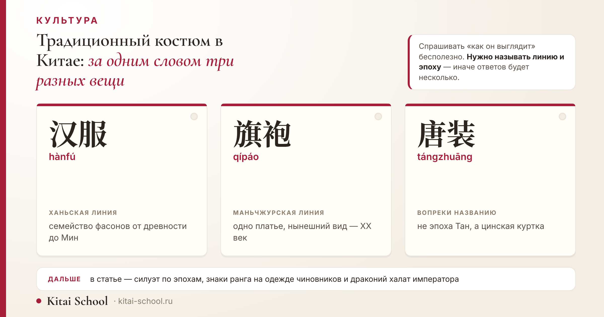
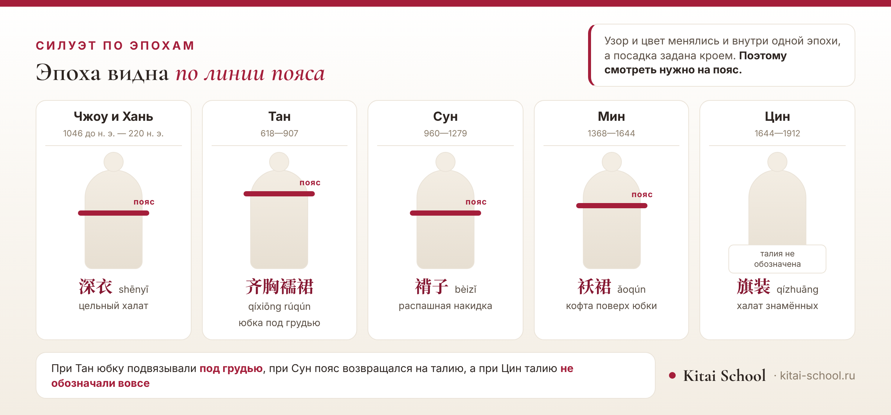

Культура
Традиционный костюм в Китае: ханьфу, ципао и эпохи, которые за ними стоят


Словосочетание «традиционный костюм в Китае» звучит так, будто речь про один наряд. На деле за ним стоят две разные линии одежды и почти три тысячи лет, в которые силуэт менялся не меньше, чем европейский. Платье с воротником-стойкой и многослойный костюм с запахом на груди — это не два варианта одного, а вещи из разных эпох и от разных народов. Ниже — как костюм выглядел в каждую крупную эпоху, по какому признаку эпоха определяется быстрее всего, что означали квадраты на одежде чиновников и почему дракона мог носить не всякий.
Костюмов несколько. 汉服 — ханьская линия, семейство фасонов от древности до Мин; 旗袍 — одно платье маньчжурской линии, сложившееся в XX веке. Эпоха виднее всего по линии пояса: при Хань он на талии, при Тан юбку подвязывают под грудью, при Цин талию не обозначают вовсе. На одежде чиновников квадратные нашивки 补子: у гражданских птица, у военных зверь. Пятикоготный дракон — знак императора.
Короткий ответ: костюмов несколько
Когда спрашивают про национальный наряд Китая, обычно имеют в виду одно из трёх.
- 汉服 (hànfú) — одежда ханьцев. Это не фасон, а целое семейство: внутри свои сочетания для каждой эпохи.
- 旗袍 (qípáo) — платье маньчжурской линии. Одно изделие, его можно сшить и померить.
- 唐装 (tángzhuāng) — куртка на узелковых пуговицах. К эпохе Тан отношения не имеет, об этом ниже.
Чем ципао отличается от ханьфу по семи признакам, как устроен крой каждого и почему «китайским платьем» называть ханьфу не стоит — всё это у нас в отдельной статье: как называется традиционное китайское платье. Здесь другой разрез темы: эпохи и символика.
Что в костюме не менялось
Прежде чем идти по эпохам, стоит назвать то, что оставалось общим почти всю дорогу.
Перекрёстный ворот с запахом направо. Левая пола ложится поверх правой, вырез получается в форме буквы Y. Признак древний и опознаётся мгновенно; подробно он разобран в соседней статье, потому что там же разобрана ошибка с зеркальным запахом.
Завязки вместо пуговиц. Ханьская одежда держится на поясе и завязках; узелковые пуговицы приходят позже и связаны уже с маньчжурской линией.
Слои. Костюм собирается из нескольких предметов: нижнего, среднего и верхнего. Сколько их — зависит от случая и погоды, и единого числа тут нет.
Чжоу и Хань: цельный халат
Самый ранний из фасонов, о которых есть смысл говорить предметно, — 深衣 (shēnyī).
Устроен он так: верх и низ кроят отдельно, а потом сшивают в одно длинное одеяние. Пояс идёт по талии, рукава широкие, длина до пола.
Силуэт получается прямым и закрытым: фигура не подчёркнута, тело укрыто целиком. Этот фасон носили и мужчины, и женщины, и именно он чаще всего имеется в виду, когда говорят про «древнюю китайскую одежду».
Тан: юбка под грудью
Эпоха Тан (618—907) дала силуэт, который ни с чем не спутать, и дело не в узорах.
Юбку подвязывали высоко — под грудью. Сочетание короткой кофты и длинной юбки называется 襦裙 (rúqún), а его танский вариант с высокой линией — 齐胸襦裙 (qíxiōng rúqún). Рукава при этом широкие, ткань лёгкая, и фигура от такой посадки кажется вытянутой.
| Эпоха | Годы | Фасон | Что это | Примета |
|---|---|---|---|---|
| Чжоу и Хань | 1046 до н. э. — 220 н. э. | 深衣 shēnyī | цельный халат | верх и низ скроены отдельно, но сшиты вместе |
| Тан | 618—907 | 齐胸襦裙 qíxiōng rúqún | юбка под грудью | юбку подвязывают высоко, рукава широкие |
| Сун | 960—1279 | 褙子 bèizǐ | распашная накидка | силуэт прямой, без подчёркнутой фигуры |
| Мин | 1368—1644 | 袄裙 ǎoqún | кофта поверх юбки | с этой эпохой связана юбка 马面裙 |
| Цин | 1644—1912 | 旗装 qízhuāng | халат знамённых | прямой крой, линия талии не обозначена |

Почему именно пояс, а не что-то другое. Узор, цвет и ткань менялись и внутри одной эпохи, а посадка — признак устойчивый: она задаётся кроем и видна даже на мелком изображении. Поэтому по линии пояса эпоха определяется быстрее всего.
Сун: сдержанный силуэт
При Сун (960—1279) мода идёт в обратную сторону — к простоте.
Появляется 褙子 (bèizǐ) — длинная распашная накидка прямого кроя с разрезами по бокам. Её носят поверх кофты и юбки, и она не подчёркивает фигуру, а наоборот, выпрямляет силуэт.
Пояс возвращается на талию, ткани становятся строже, широкие танские рукава уступают место более узким. Если танский костюм выглядит праздничным, то сунский — повседневным даже в парадном варианте.
Мин: 袄裙 и 马面裙
Эпоха Мин (1368—1644) — последняя, когда ханьская линия была в Китае основной.
Сочетание эпохи — 袄裙 (ǎoqún): кофта надевается поверх юбки, а не заправляется, и линия пояса снова поднимается. Воротник у кофты может быть стоячим, с мелкими застёжками.
С этой же эпохой связана 马面裙 (mǎmiànqún) — юбка с гладкими полотнищами спереди и сзади и складками по бокам. Из всех предметов старого костюма именно она лучше всего вернулась в сегодняшний гардероб, но об этом в конце.
Цин: маньчжурская линия
С приходом Цин (1644—1912) в одежде происходит перелом.
Ханьская линия вытесняется из обихода, а основной становится маньчжурская. Мужчины носят 马褂 (mǎguà) — короткую куртку на узелковых пуговицах, женщины — 旗装 (qízhuāng), прямой просторный халат знамённых.
Талию этот халат не обозначает вовсе — крой прямой, фигура скрыта. Именно из него позже вырастет ципао, но вырастет не сразу и совсем в другом городе и веке; эта история разобрана отдельно: как называется традиционное китайское платье.
Ученик готовил доклад о династии Тан и собрал презентацию из картинок, найденных по запросу «китайский традиционный костюм». Выглядело нарядно, и он был доволен.
Разбирать пришлось не содержание, а сами иллюстрации. Половина оказалась из эпохи Цин — прямые халаты без талии, — а одна и вовсе кадром из сериала, где костюм придуман художником от начала до конца.
Признак, по которому мы их рассортировали, оказался простым. Не узор, не цвет и не число слоёв, а линия пояса: при Тан юбку подвязывали высоко, под грудью, и силуэт от этого совсем другой. Ошибиться трудно, если знать, куда смотреть.
Доклад он переделал за вечер — и, что важнее, перестал брать картинки по общему запросу. Теперь ищет по названию фасона и эпохе, а это уже половина проверки.
Вывод, который я с тех пор повторяю: про традиционный костюм нельзя спрашивать «как он выглядит». Можно спрашивать только «когда и у кого».
Добавлю то, чего в истории нет. Сериалы — отдельная ловушка: костюм там часто собирают из признаков разных эпох, потому что задача художника не датировка, а картинка. Для доклада такие кадры не годятся, даже если выглядят убедительно.
Знаки ранга: 补子
Самая говорящая часть старого костюма — не фасон, а нашивка.
补子 (bǔzi) — квадратная нашивка на груди и спине форменного халата чиновника. По ней определяли, кто перед вами: служба и ранг читались с одного взгляда.
Правило простое и закрепилось при Мин: у гражданских чиновников на нашивке птица, у военных — зверь. При Цин систему сохранили. Чем выше ранг, тем выше в своём ряду стояло существо.
| Служба | Ранг | Знак | Кто это |
|---|---|---|---|
| гражданские | 1-й | 仙鹤 | журавль |
| гражданские | 3-й | 孔雀 | павлин |
| гражданские | 5-й | 白鹇 | серебряный фазан |
| гражданские | 6-й | 鹭鸶 | цапля |
| военные | 1-й | 麒麟 | цилинь |
| военные | 2-й | 狮子 | лев |
| военные | 3-й | 豹 | леопард |
| военные | 4-й | 虎 | тигр |
Полной таблицы девяти рангов я не привожу сознательно. Списки эпох Мин и Цин различались, а сводки в разных источниках расходятся между собой; сверять их построчно мне не по чему. В таблице выше — только те позиции, которые подтверждаются музейными и справочными материалами.
Что стоит запомнить: одежда чиновника была не нарядом, а документом. Она сообщала должность раньше, чем человек успевал представиться.
Драконий халат: что носил император
Верхняя ступень той же системы — одежда самого императора.
龙袍 (lóngpáo) — халат с драконами. Дракон здесь не украшение, а знак власти, и различали его по числу когтей: пятикоготный считался принадлежностью императора, изображения с меньшим числом когтей допускались для других лиц.
Про цвет скажу коротко, потому что у нас об этом есть отдельные статьи: оттенок жёлтого был закреплён за императором — жёлтый цвет в Китае; красный связан с праздником и свадьбой — красный цвет в китайской культуре.
Оговорка. Расписывать, в какие дни какой халат надевали, не берусь: церемониальные правила менялись, и короткого достоверного пересказа не выходит.
Из чего шили: шёлк
Материал в старом костюме значил не меньше фасона.
Шёлк был дорогим не из-за редкости нити, а из-за труда. Выкормить гусениц, размотать коконы, спрясть и соткать — всё это ручные операции, каждая из которых требует времени и навыка. Отсюда и цена, и то, что шёлковая одежда сама по себе была знаком положения.
Простые сословия носили ткани попроще, и это было видно со стороны: по материалу читался достаток так же, как по нашивке — должность.
Чего я не рассказываю: легенду о том, кто и когда открыл шёлк. Красивых версий несколько, имена и даты в них расходятся, а подтверждений у меня нет — поэтому обойдусь без них.
XX век и сегодня
Дальше одежда меняется быстро, и традиционной в прежнем смысле уже не остаётся.
В начале века появляется 中山装 (zhōngshānzhuāng) — костюм с глухим воротником и накладными карманами, названный по имени Сунь Ятсена. Это одежда нового времени, а не старая традиция.
Там же разобрана и 唐装: вопреки названию, фасон восходит к цинской куртке 马褂, а имя за ним закрепилось после саммита АТЭС в Шанхае в 2001 году.
Что носят сейчас. Костюм целиком — по случаю: фестивали, съёмки у исторических мест, свадьбы. А вот отдельные предметы уходят в обычный гардероб: 马面裙 сегодня сочетают со свитером и пальто, и это уже не костюм, а вещь. Такую моду на своё называют 国潮 (guócháo).
Как именно ханьфу вернулось на улицы, с какого случая ведут отсчёт движения и где его носят чаще всего — в соседней статье: как называется традиционное китайское платье.
Частые ошибки
- Считать, что костюм один. «Китайский традиционный костюм» — это запрос без ответа: нужно называть эпоху или хотя бы линию, ханьскую или маньчжурскую.
- Называть ципао древним. Халат знамённых — цинский, а платье в нынешнем виде моложе ста лет.
- Доверять картинкам из поиска. Там вперемешку эпохи, реконструкции и кадры из сериалов; датировку по ним не ставят.
- Путать 唐装 с эпохой Тан. Название обманывает: фасон цинский по происхождению.
- Брать наряд со знаками ранга как карнавальный. Нашивка и драконы — историческая форма, носить её «для красоты» не принято.
Шестое не ошибка, а совет: ищите по названию фасона знаками — 襦裙, 褙子, 袄裙. Запрос на русском даёт случайную подборку, запрос знаками — вещи одного типа.
Чего в статье нет намеренно
- Нет разбора кроя ципао и сравнения его с ханьфу по признакам — это соседняя статья, и пересказывать её незачем.
- Нет истории возвращения ханьфу на улицы с датами и именами: она разобрана там же.
- Нет разбора 唐装, 中山装, кимоно и ханбока — туда же.
- Нет полной таблицы девяти рангов: списки Мин и Цин различались, сверить построчно не по чему.
- Нет символики цвета — жёлтому, красному и фиолетовому у нас посвящены отдельные страницы.
- Нет легенды о происхождении шёлка с именами и датами и нет цифр по стоимости тканей.
- Нет утверждения, что современное ханьфу точно воспроизводит эпоху: единого стандарта нет, и споры об этом идут до сих пор.
И общее. Традиционный костюм удобнее представлять не как наряд, а как способ сообщить о себе: кто ты по службе, какого достатка, по какому случаю одет. Фасоны менялись, а это назначение оставалось — и по нему старая одежда читается лучше, чем по красоте.
Культура быстрее укладывается в голове вместе с языком: онлайн-курсы китайского. Оставить заявку или написать в Telegram.
Частые вопросы (FAQ)
Как называется традиционная китайская одежда?
Названий два, и они не об одном и том же. 汉服 (hànfú) — ханьская одежда, целое семейство фасонов разных эпох, а 旗袍 (qípáo) — одно платье маньчжурской линии, в нынешнем виде сложившееся в XX веке. Подробное сравнение этих двух слов, с разбором кроя, у нас в отдельной статье про китайское платье.
Чем костюм эпохи Тан отличается от более поздних?
Прежде всего линией пояса. При Тан юбку подвязывали высоко, под грудью — такое сочетание называют 齐胸襦裙 (qíxiōng rúqún), — и силуэт получается длинным и мягким, с широкими рукавами. При Сун талия возвращается на место, при Мин юбку снова носят выше, а при Цин линию талии не обозначают вовсе.
Что означают квадраты на одежде чиновников?
Это 补子 (bǔzi) — нашивки, по которым определяли должность и ранг. Правило закрепилось при Мин и сохранилось при Цин: у гражданских чиновников на нашивке птица, у военных — зверь. Чем выше ранг, тем выше в этом ряду стояло существо: у гражданских первого ранга — журавль, у военных первого — цилинь.
Кто имел право носить дракона?
Дракон на одежде был знаком власти, и главное отличие — число когтей. Пятикоготный дракон считался принадлежностью императора, изображения с меньшим числом когтей допускались для других лиц. Сам халат с драконами называется 龙袍 (lóngpáo).
唐装 — это одежда эпохи Тан?
Нет, несмотря на название. Фасон восходит к цинской куртке 马褂, а имя за ним закрепилось после саммита АТЭС в Шанхае в октябре 2001 года, когда участники фотографировались в одежде принимающей стороны. Подробнее об этой путанице — в нашей статье про китайское платье.
Можно ли надеть традиционный костюм туристу?
Да, это обычное дело: у исторических мест работают студии, где костюм дают напрокат вместе с причёской и съёмкой. Стоит помнить две вещи: запах ворота у ханьской одежды должен идти направо, а наряд с драконами и знаками ранга — это историческая форма, а не праздничный костюм, и носить его как карнавальный не принято.
Пусть эпоха угадывается с первого взгляда! 加油！
Источники
- Эпохи и фасоны не набраны руками. Названия, годы, знаки и высота пояса лежат в одном файле данных; таблица в тексте, ярлыки на обложке и схемы силуэта читают его при сборке, так что разойтись между собой они не могут.
- Что проверяется на сборке: порядок эпох, непересечение годов, высокая посадка пояса при Тан против талии при Хань, отсутствие талии у Цин и неповторяемость названий фасонов.
- Знаки ранга 补子: правило «у гражданских птицы, у военных звери» закреплено при Мин и сохранено при Цин — по материалам китайских музейных и справочных публикаций.
- Подтверждённые позиции — восемь: четыре гражданских и четыре военных. Полной таблицы девяти рангов нет намеренно: списки Мин и Цин различались, а сводки расходятся между собой.
- Пятикоготный дракон как принадлежность императора приведён как общепринятое описание; церемониальные правила по дням и случаям не разбираю.
- 唐装 и саммит АТЭС: имя закрепилось после встречи в Шанхае в октябре 2001 года, фасон восходит к цинской 马褂 — по публикациям китайских СМИ того времени и справочным источникам. Сам разбор — в статье про китайское платье.
- Хронология династий дана по общепринятым границам: Чжоу, Хань, Тан, Сун, Мин, Цин.
- Про шёлк сказано только то, что он был трудоёмким и потому дорогим; легенды о его происхождении, имена и даты не привожу, цифр по стоимости тканей нет.
- Символика цвета, сравнение ципао и ханьфу, история возвращения ханьфу разобраны в отдельных наших статьях, ссылки по ходу текста.
- Случай с докладом — из занятий Kitai School; имени ученика и города не называю.